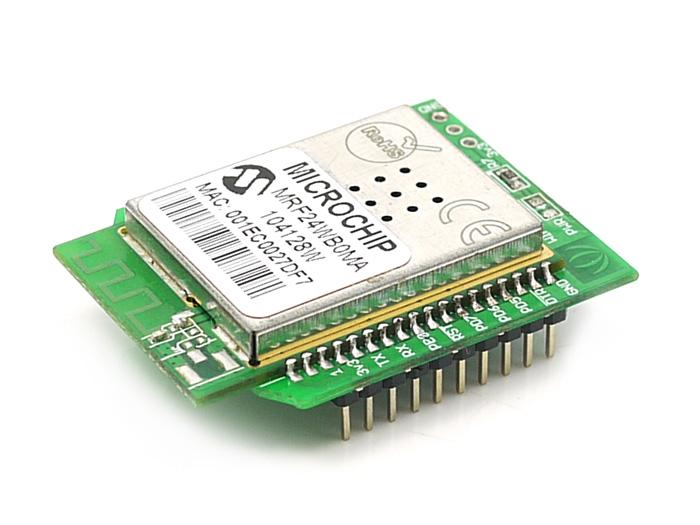
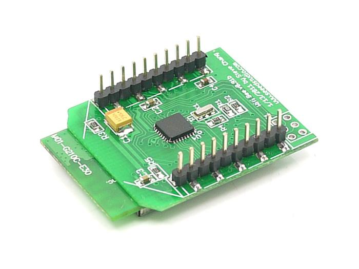
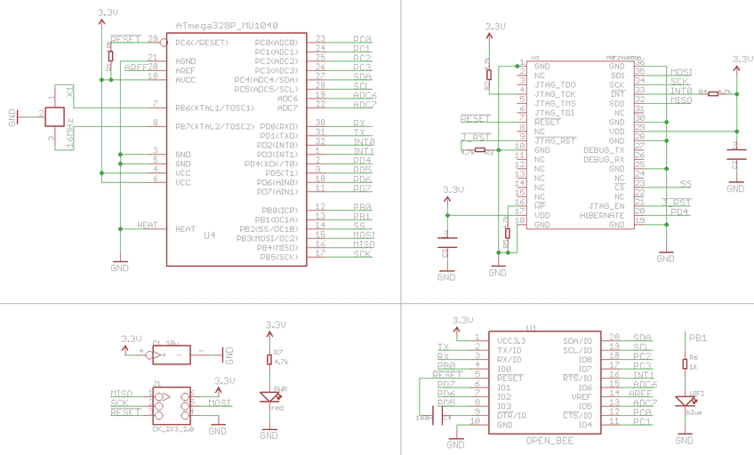
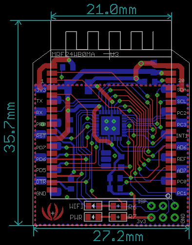

Wifi Bee is a xBee Pro socket compatible standalone MCU node useful for Wireless Sensor Network. It integrates Microchip IEEE 802.11 Wi-Fi transceiver module MRF24WB0MA and a 8bit AVR MCU ATMega328P. The smart and xBee Pro Socket compatible outlook makes it very easy to integrate in your product. The ATMega328P could be directly programmed under the open source Arduino IDE when you plug it on to the UartSBee or Grove - XBee Carrier. The SPI pins on MCU are connected to the corresponding pins of MRF24WB0MA to communicate with each other, while some of the other pins (DIO, AD,PWM etc.) are brought out to the 20 pins of 2.0 mm male pin headers. Please note there is no dedicated firmware for Wifi Bee yet now, but you may use the firmware of WiShield from AsyncLabs. Please make sure you can use it before you buy.
Model: WLS48188P
 

Click here to open schematic in PDF format
| Item | Minimum | Typical | Maximum |
|---|---|---|---|
| Operate voltage | 3.0V | 3.3V | 3.6V |
| Working temperature | 0°C to +70°C | ||
| Working frequency | 16MHz | ||
| MCU | ATmega328P | ||
Wifi Bee is of 27.2mm x 35.7mm size.

| Pin | # | Pad Type | Description | Arduino Pin Number |
|---|---|---|---|---|
| 3V3 | 1 | Supply input | VCC, +3.3V | - |
| TX | 2 | Output | Uart Tx port | 1(DIO) |
| RX | 3 | Input | Uart Rx port | 0(DIO) |
| PB0 | 4 | Input/Output | ATmega328P PB0 | 8(DIO) |
| !RESET | 5 | Input | ATmega328 Reset port | |
| PD7 | 6 | Input/Output | ATmega328P PD7 | 7(DIO) |
| PD6 | 7 | Input/Output | ATmega328P PD6 | 6(DIO) |
| PD5 | 8 | Input/Output | ATmega328P PD5 | 5(DIO) |
| !DTR | 9 | Input | Used for programming the ATmega328P | - |
| GND | 10 | GND | GND | - |
| PC1 | 11 | Input/Output | ATmega328P PC1 | 1(Analog input)/15(DIO) |
| PC0 | 12 | Input/Output | ATmega328P PC0 | 0(Analog input)/14(DIO) |
| AD7 | 13 | Input | ATmega328P ADC7 | 7(Analog input) |
| VREF | 14 | Input | ATmega328P AREF port | - |
| AD6 | 15 | Input | ATmega328P ADC6 | 6(Analog input) |
| INT1 | 16 | Input/Output | ATmega328P PD3 | 3(DIO) |
| PC3 | 17 | Input/Output | ATmega328P PC3 | 3(Analog input)/17(DIO) |
| PC2 | 18 | Input/Output | ATmega328P PC2 | 2(Analog input)/16(DIO) |
| SCL | 19 | Input/Output | ATmega328P PC5 | 5(Analog input)/19(DIO) |
| SDA | 20 | Input/Output | ATmega328P PC4 | 4(Analog input)/18(DIO) |
This section gives a brief overview on setting up a Home Network with a WiFi router suitable for Wifi Bee.
The application examples uses the WiSheild library of Asynclabs. There is no other dedicated firmware for Wifi Bee. This library uses uip TCP/IP stack of Adam Dunkels. This library is provided under GPL v2 by the original author. Hence, any application that could be built with WiShield should also be GPLv2 compatible.
//unsigned char security_type = 2; // 0 - open; 1 - WEP; 2 - WPA; 3 - WPA2
const prog_char security_passphrase[] PROGMEM = {"12345678"}
http://192.168.0.4
Hello World!! I am WifiBee.
/* * Web Server: Modified WebServer.pde example. * A simple web server example using the WiShield library and WiBee. */ #include <WiShield.h> #define WIRELESS_MODE_INFRA 1 #define WIRELESS_MODE_ADHOC 2 // Wireless configuration parameters ---------------------------------------- unsigned char local_ip[] = {192,168,0,4}; // IP address of Wifi Bee unsigned char gateway_ip[] = {192,168,0,1}; // router or gateway IP address unsigned char subnet_mask[] = {255,255,255,0}; // subnet mask for the local Wireless network const prog_char ssid[] PROGMEM = {"HOMENETWORK"}; // max 32 bytes unsigned char security_type = 2; // 0 - open; 1 - WEP; 2 - WPA; 3 - WPA2 // WPA/WPA2 passphrase const prog_char security_passphrase[] PROGMEM = {"12345678"}; // max 64 characters. The network name. // WEP 128-bit keys // sample HEX keys prog_uchar wep_keys[] PROGMEM = { 0x01, 0x02, 0x03, 0x04, 0x05, 0x06, 0x07, 0x08, 0x09, 0x0a, 0x0b, 0x0c, 0x0d, // Key 0 0x00, 0x00, 0x00, 0x00, 0x00, 0x00, 0x00, 0x00, 0x00, 0x00, 0x00, 0x00, 0x00, // Key 1 0x00, 0x00, 0x00, 0x00, 0x00, 0x00, 0x00, 0x00, 0x00, 0x00, 0x00, 0x00, 0x00, // Key 2 0x00, 0x00, 0x00, 0x00, 0x00, 0x00, 0x00, 0x00, 0x00, 0x00, 0x00, 0x00, 0x00 // Key 3 }; // setup the wireless mode // infrastructure - connect to AP // adhoc - connect to another WiFi device unsigned char wireless_mode = WIRELESS_MODE_INFRA; unsigned char ssid_len; unsigned char security_passphrase_len; //--------------------------------------------------------------------------- void setup() { WiFi.init(); } // This is the webpage that is served up by the webserver const prog_char webpage[] PROGMEM = {"HTTP/1.1 200 OK\r\nContent-Type: text/html\r\n\r\n<center><h1>Hello World!! I am WifiBee.</h1></center>"}; void loop() { WiFi.run(); }
http://192.168.0.4
/* * A simple sketch that uses WiServer and Seeedstudios Wifi Bee to serve a webpage. * An analog sensor is connected to A2 of Wifi Bee (use Grove - XBee Carrier). This value is sent to the * client (a web browser). The HTML page is prepared based on sensor value. It also has direction * to refresh itself automatically. */ /*This example is based on SimpleServer.pde. Copyrights rests with original author */ /* for this example to work, modify apps-conf.h file as below ; only APP_WISERVER mode is enabled : -------------------------------------------------------------------- //Here we include the header file for the application(s) we use in our project. //#define APP_WEBSERVER //#define APP_WEBCLIENT //#define APP_SOCKAPP //#define APP_UDPAPP #define APP_WISERVER ---------------------------------------------------------------------- */ #include <WiServer.h> #define WIRELESS_MODE_INFRA 1 #define WIRELESS_MODE_ADHOC 2 // Wireless configuration parameters ---------------------------------------- unsigned char local_ip[] = {192,168,0,4}; // IP address of WifiBee unsigned char gateway_ip[] = {192,168,0,1}; // router or gateway IP address unsigned char subnet_mask[] = {255,255,255,0}; // subnet mask for the local network const prog_char ssid[] PROGMEM = {"HOMENETWORK"}; // max 32 bytes unsigned char security_type = 2; // 0 - open; 1 - WEP; 2 - WPA; 3 - WPA2 // WPA/WPA2 passphrase const prog_char security_passphrase[] PROGMEM = {"12345678"}; // max 64 characters // WEP 128-bit keys // sample HEX keys prog_uchar wep_keys[] PROGMEM = { 0x01, 0x02, 0x03, 0x04, 0x05, 0x06, 0x07, 0x08, 0x09, 0x0a, 0x0b, 0x0c, 0x0d, // Key 0 0x00, 0x00, 0x00, 0x00, 0x00, 0x00, 0x00, 0x00, 0x00, 0x00, 0x00, 0x00, 0x00, // Key 1 0x00, 0x00, 0x00, 0x00, 0x00, 0x00, 0x00, 0x00, 0x00, 0x00, 0x00, 0x00, 0x00, // Key 2 0x00, 0x00, 0x00, 0x00, 0x00, 0x00, 0x00, 0x00, 0x00, 0x00, 0x00, 0x00, 0x00 // Key 3 }; // setup the wireless mode // infrastructure - connect to AP // adhoc - connect to another WiFi device unsigned char wireless_mode = WIRELESS_MODE_INFRA; unsigned int sensorValue; unsigned char ssid_len; unsigned char security_passphrase_len; // End of wireless configuration parameters ---------------------------------------- int counter; // This is our page serving function that generates web pages boolean sendMyPage(char* URL) { // Check if the requested URL matches "/" if (strcmp(URL, "/") == 0) { // Use WiServer's print and println functions to write out the page content WiServer.print("<html>"); // Instruct the web broweser to refersh every 10 seconds WiServer.print("<head><meta http-equiv=\"refresh\" content=\"10\"> </head>"); WiServer.println("<H1>WifiBee Connected...<H1>"); WiServer.print("<H2>Sensor Value = "); WiServer.print(sensorValue); //A2 is connected to an exernal sensor. The RAW value is send to the client. WiServer.print("</H2></html>"); return true; } // URL not found return false; } void setup() { // Initialize WiServer and have it use the sendMyPage function to serve pages WiServer.init(sendMyPage); // Enable Serial output and ask WiServer to generate log messages (optional) Serial.begin(57600); WiServer.enableVerboseMode(true); } void loop(){ sensorValue = analogRead(A2); //A2 is connected to an exernal sensor via Grove interface in Grove - XBee Carrier . // Run WiServer WiServer.server_task(); delay(10); }
This section will be revised later
/* * A simple sketch that uses WiServer library and Seeedstudio's WifiBee to send sensor * feed to pachube.com ; * This is modified version SimpleClient.pde. Copyright rests with original author. */ /* for this example to work, modify apps-conf.h file as below ; only APP_WISERVER mode is enabled : -------------------------------------------------------------------- //Here we include the header file for the application(s) we use in our project. //#define APP_WEBSERVER //#define APP_WEBCLIENT //#define APP_SOCKAPP //#define APP_UDPAPP #define APP_WISERVER ---------------------------------------------------------------------- */ #include <WiServer.h> #define WIRELESS_MODE_INFRA 1 #define WIRELESS_MODE_ADHOC 2 // Wireless configuration parameters ---------------------------------------- unsigned char local_ip[] = {192,168,0,4}; // IP address of WifiBee unsigned char gateway_ip[] = {192,168,0,1}; // router or gateway IP address unsigned char subnet_mask[] = {255,255,255,0}; // subnet mask for the local network const prog_char ssid[] PROGMEM = {"HOMENETWORK"};// max 32 bytes unsigned char security_type = 2; // 0 - open; 1 - WEP; 2 - WPA; 3 - WPA2 // WPA/WPA2 passphrase const prog_char security_passphrase[] PROGMEM = {"12345678"}; // max 64 characters // WEP 128-bit keys // sample HEX keys prog_uchar wep_keys[] PROGMEM = { 0x01, 0x02, 0x03, 0x04, 0x05, 0x06, 0x07, 0x08, 0x09, 0x0a, 0x0b, 0x0c, 0x0d, // Key 0 0x00, 0x00, 0x00, 0x00, 0x00, 0x00, 0x00, 0x00, 0x00, 0x00, 0x00, 0x00, 0x00, // Key 1 0x00, 0x00, 0x00, 0x00, 0x00, 0x00, 0x00, 0x00, 0x00, 0x00, 0x00, 0x00, 0x00, // Key 2 0x00, 0x00, 0x00, 0x00, 0x00, 0x00, 0x00, 0x00, 0x00, 0x00, 0x00, 0x00, 0x00 // Key 3 }; // setup the wireless mode // infrastructure - connect to AP // adhoc - connect to another WiFi device unsigned char wireless_mode = WIRELESS_MODE_INFRA; unsigned char ssid_len; unsigned char security_passphrase_len; // End of wireless configuration parameters ---------------------------------------- // Function that prints data from the server void printData(char* data, int len) { // Print the data returned by the server // Note that the data is not null-terminated, may be broken up into smaller packets, and // includes the HTTP header. while (len-- > 0) { Serial.print(*(data++)); } } int sensorValue=0; //Prepare data to the feed void pachubefeedData() { sensorValue=analogRead(A2); //Read analog sensor connected to A2 (Use Grove - XBee Carrier interface) WiServer.print(sensorValue); } // IP Address for pachube.com uint8 ip[] = {173,203,98,29}; char hostName[] = "www.pachube.com\nX-PachubeApiKey: YOUR_API_KEY_HERE\nConnection: close"; // Replace YOUR_API_KEY_HERE , with your API key char url[] = "/api/12345.csv?_method=put"; //Replace 12345 with your feed number // A request that POSTS data to Pachube POSTrequest postPachubeFeed(ip, 80, hostName, url, pachubefeedData); void setup() { // Initialize WiServer (we'll pass NULL for the page serving function since we don't need to serve web pages) WiServer.init(NULL); // Enable Serial output and ask WiServer to generate log messages (optional) Serial.begin(57600); WiServer.enableVerboseMode(true); // Have the processData function called when data is returned by the server postPachubeFeed.setReturnFunc(printData); } // Time (in millis) when the data should be retrieved long updateTime = 0; void loop(){ // Check if it's time to send an update if (millis() >= updateTime) { postPachubeFeed.submit(); // Send another update after a min updateTime += 60; } // Run WiServer WiServer.server_task(); delay(10); }
| Part | Quantity | Value | Package |
|---|---|---|---|
| C1 | 1 | 10u | C_TAN_3X3.5 |
| C2,C3 | 2 | 1u | 0603 |
| C4 | 1 | 100n | 0603 |
| J1 | 1 | CK_2X3_2.0 | CK_2X3_2.0 |
| PWR | 1 | red | LED0603 |
| R1 | 1 | 10k | 0603 |
| R2,R3,R4,R5,R7 | 5 | 4.7k | 0603 |
| R6 | 1 | 1k | 0603 |
| U1 | 1 | OPEN_BEE | XBEE_EXT_SMD |
| U3 | 1 | MRF24WB0MA | MRF24WB0MA |
| U4 | 1 | ATmega328P_MU1040 | MLF32X |
| WIFI | 1 | blue | LED0603 |
| X1 | 1 | 16MHz | XTAL_3X2 |
If you have questions or other better design ideas, you can go to our forum or wish to discuss.
| Revision | Descriptions | Release |
|---|---|---|
| v0.91b | Initial public release | April 6, 2011 |
| v1.0 | Change the width of the signal wire from 6 mil to 8 mil | Dec 13, 2011 |